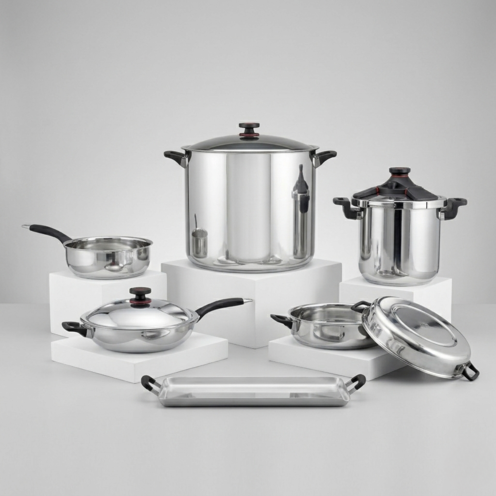
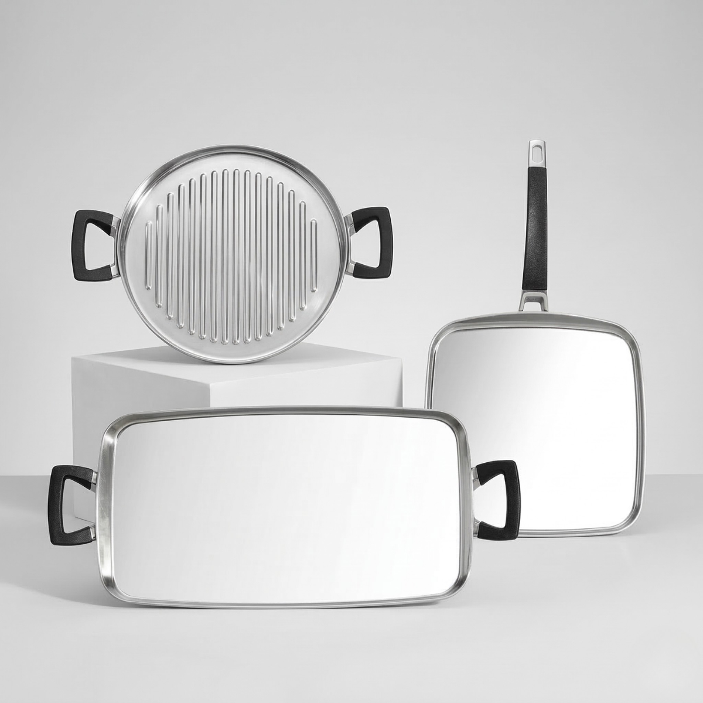
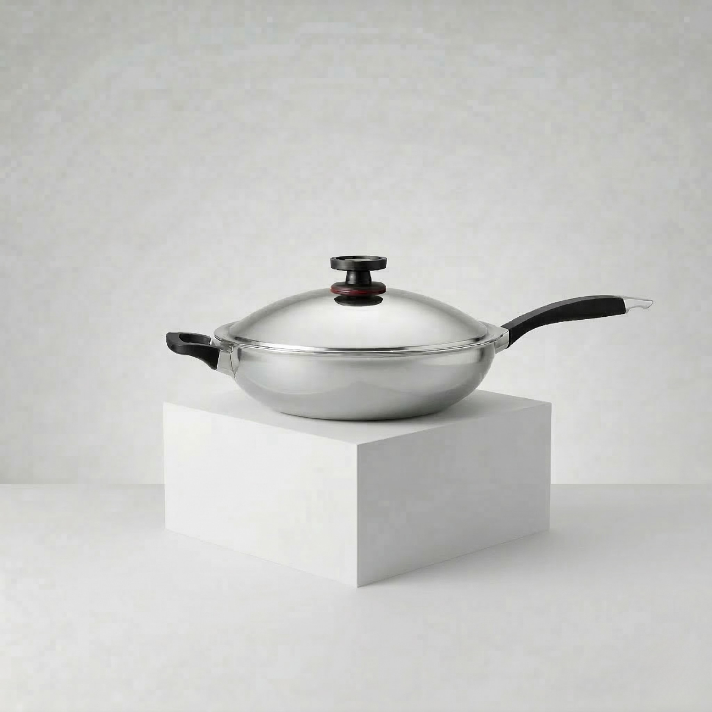

Piezas Individuales – Línea Innove
Complementa tu sistema Royal Prestige® Innove con piezas individuales diseñadas para aportar más versatilidad, capacidad y opciones de preparación en una cocina premium.
Aquí encontrarás piezas individuales Royal Prestige® para ampliar tu experiencia culinaria con más funciones, más capacidad y soluciones prácticas para cocinar, servir y preparar recetas familiares.
Descripción general
Las piezas individuales de la línea Innove de Royal Prestige® están pensadas para quienes desean ampliar su sistema de cocina con utensilios especializados que aporten más flexibilidad en el día a día.
Dentro de esta selección encontrarás opciones como MultiPan, paelleras, comales, wok, ollas de presión y pavera, ideales para cocinar con mayor comodidad, preparar porciones familiares y adaptarte mejor a distintos estilos de receta.
Como parte del universo Royal Prestige® Innove, estas piezas están orientadas a una cocina más práctica, eficiente y elegante, integrándose muy bien con una experiencia culinaria premium.
Piezas disponibles
- Royal Prestige® MultiPan
- Paelleras Innove
- Línea de comales Innove
- Wok Innove
- Ollas de presión de 6 y 10 litros
- Pavera ovalada
Royal Prestige® MultiPan
El Royal Prestige® MultiPan es una de las piezas más versátiles para complementar tu cocina. Está diseñado para simplificar la preparación de recetas en casa con una propuesta multifuncional que reúne practicidad, capacidad y eficiencia en un solo utensilio.
Su diseño te permite resolver distintas técnicas de cocción con una sola pieza, lo que lo convierte en una excelente opción para quienes buscan más rendimiento, orden y flexibilidad en la cocina diaria.

Características, usos y beneficios
- Utensilio multifuncional con hasta 11 funciones en 1 sola pieza.
- Ideal para sellar, sofreír, asar, brasear, dorar, saltear, cocer a fuego lento, cocer al vapor, hervir, hornear y colar.
- Diseñado para ampliar las posibilidades de preparación sin llenar la cocina de piezas adicionales.
- Fabricado con acero de calidad superior para una experiencia culinaria práctica y confiable.
- Excelente para recetas familiares, preparaciones abundantes y cocina diaria con mayor versatilidad.
- Una pieza muy útil para quienes desean sacar más provecho a su sistema Royal Prestige®.
Video de presentación — MultiPan
Paelleras Innove
Las paelleras Innove son piezas muy atractivas para quienes desean cocinar con mayor superficie y servir con elegancia. Su formato resulta ideal para arroces, paellas, salteados, carnes con guarnición y recetas para compartir.
Además de aportar una presentación muy vistosa en la mesa, permiten trabajar preparaciones amplias con gran comodidad, convirtiéndose en una excelente adición para hogares que cocinan con frecuencia para varias personas.

Características, usos y beneficios
- Diseñadas para cocinar y servir con una presentación elegante y funcional.
- Superficie amplia ideal para arroces, paellas, salteados, carnes y recetas para compartir.
- Muy útiles para comidas familiares y preparaciones de gran superficie.
- Compatibles con estufas eléctricas, de gas o de inducción.
- Fabricadas con acero inoxidable de alta calidad para durabilidad y excelente desempeño.
- Una gran opción para ampliar la versatilidad de tu cocina con piezas amplias y atractivas.
Video de presentación — Paelleras
Línea de Comales Innove
La línea de comales Innove reúne opciones muy prácticas para resolver preparaciones cotidianas con una superficie amplia y funcional. Son piezas especialmente útiles para desayunos, tortillas, carnes, vegetales, quesadillas, calentados y servicio rápido.
Tener comales especializados dentro de tu cocina permite trabajar con más comodidad y aprovechar mejor el espacio de cocción, especialmente cuando buscas rapidez y eficiencia en recetas de todos los días.

Características, usos y beneficios
- Incluye comal doble, comal sencillo y comal redondo para distintas formas de preparación.
- Muy útiles para cocinar varios alimentos con rapidez y buena distribución del espacio.
- Excelentes para cocina diaria, desayunos, tortillas, vegetales, carnes y recetas de servicio ágil.
- Complementan muy bien un sistema de cocina Royal Prestige® al aportar más superficie de trabajo.
- Diseñados para ampliar la funcionalidad de la cocina con piezas prácticas y fáciles de integrar.
- Una gran opción para quienes buscan más versatilidad en preparaciones rápidas y frecuentes.
Video de presentación — Comales
Wok Innove
El Wok Innove es una pieza pensada para quienes desean una cocción dinámica y versátil, ideal para salteados, vegetales, carnes, fideos, arroces y recetas inspiradas en cocina oriental y contemporánea.
Su diseño favorece el movimiento rápido de los ingredientes, una cocción eficiente y una experiencia más flexible para quienes disfrutan preparar recetas con textura, color y gran presentación.

Características, usos y beneficios
- Ideal para saltear, mezclar y cocinar con rapidez una gran variedad de ingredientes.
- Excelente para vegetales, carnes, fideos, arroz frito y recetas de inspiración asiática.
- Su forma favorece una cocción ágil y un mejor manejo de los ingredientes.
- Aporta versatilidad a la cocina diaria con una pieza distinta y muy funcional.
- Compatible con distintos tipos de estufa según la línea Innove.
- Una excelente opción para complementar tu sistema con una pieza moderna y práctica.
Video de presentación — Wok
Ollas de presión
Las ollas de presión Royal Prestige® son una excelente solución para quienes buscan cocinar más rápido sin renunciar a seguridad, calidad y confianza. Son especialmente útiles en recetas abundantes, cocción de carnes, legumbres, caldos y preparaciones que normalmente requieren más tiempo.
Gracias a su enfoque en velocidad y seguridad, se convierten en una de las piezas más valiosas dentro de una cocina de alto rendimiento, especialmente para familias y hogares con rutinas exigentes.

Características, usos y beneficios
- Disponibles en capacidades de 6 y 10 litros.
- Pueden reducir el tiempo de cocción hasta en una tercera parte.
- Incorporan 4 mecanismos de seguridad para cocinar con mayor tranquilidad.
- Compatibles con estufas eléctricas, de gas o de inducción.
- Fabricadas con acero inoxidable grado quirúrgico 316L.
- Ideales para una cocina más eficiente, rápida y práctica en preparaciones familiares.
Video de presentación — Ollas de presión
Pavera
La pavera ovalada Royal Prestige® es una pieza ideal para preparaciones grandes y ocasiones especiales. Su formato ofrece muy buena capacidad para cocinar y servir recetas familiares con una presentación elegante y una presencia destacada en la cocina.
Es una excelente opción para quienes desean una pieza amplia, funcional y atractiva para celebraciones, reuniones y comidas donde el espacio y la capacidad hacen una gran diferencia.

Características, usos y beneficios
- Pieza amplia y versátil para preparar comidas familiares y celebraciones durante todo el año.
- Puede utilizarse tanto en la estufa como en el horno.
- Dimensiones de 18" x 13" / 46 cm x 33 cm.
- Fabricada con acero inoxidable grado quirúrgico para mayor resistencia y durabilidad.
- Asas ergonómicas diseñadas para no sobrecalentarse sobre la estufa.
- Muy útil para recetas grandes, servicio elegante y una cocina mejor equipada.
Video de presentación — Pavera
¿Por qué elegir piezas individuales Royal Prestige®?
Las piezas individuales de la línea Innove son una forma inteligente de ampliar tu cocina con utensilios que responden a necesidades concretas: más superficie, más capacidad, más rapidez o más versatilidad.
Esto te permite construir una cocina más funcional, mejor adaptada a tus recetas y mucho más completa, sin perder la estética premium y la experiencia de uso que caracteriza a Royal Prestige®.
Si ya cuentas con un sistema de cocina o si deseas complementarlo poco a poco, estas piezas individuales pueden ayudarte a crear una solución más personalizada para tu hogar.
Explorar catálogo completo
¿Quieres conocer más sistemas y accesorios disponibles? Explora el catálogo digital completo de Royal Prestige y descubre más opciones de la línea Innove y otros productos para tu cocina.
¿Quieres conocer estas piezas más a fondo?
Escríbenos y te ayudamos a identificar cuáles piezas individuales de la línea Innove se adaptan mejor a tu cocina, tu espacio y tu estilo de preparación.